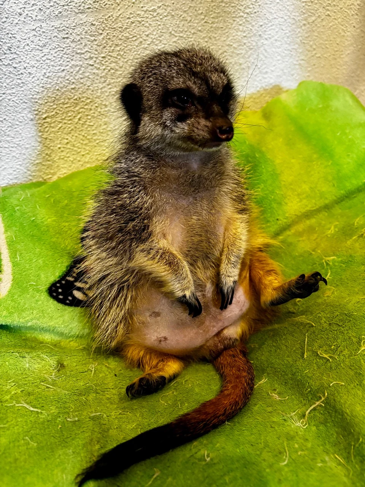
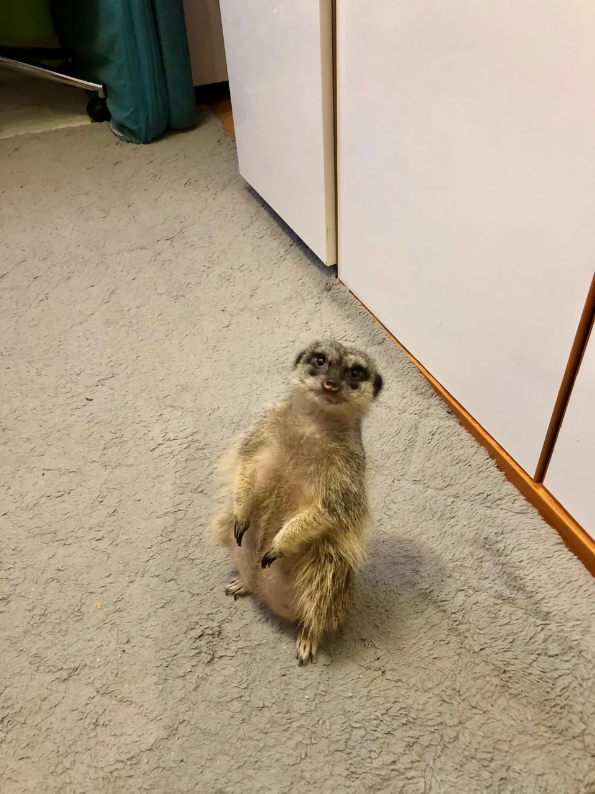
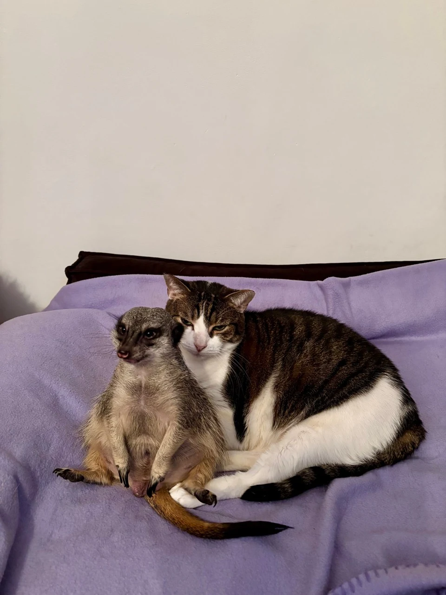
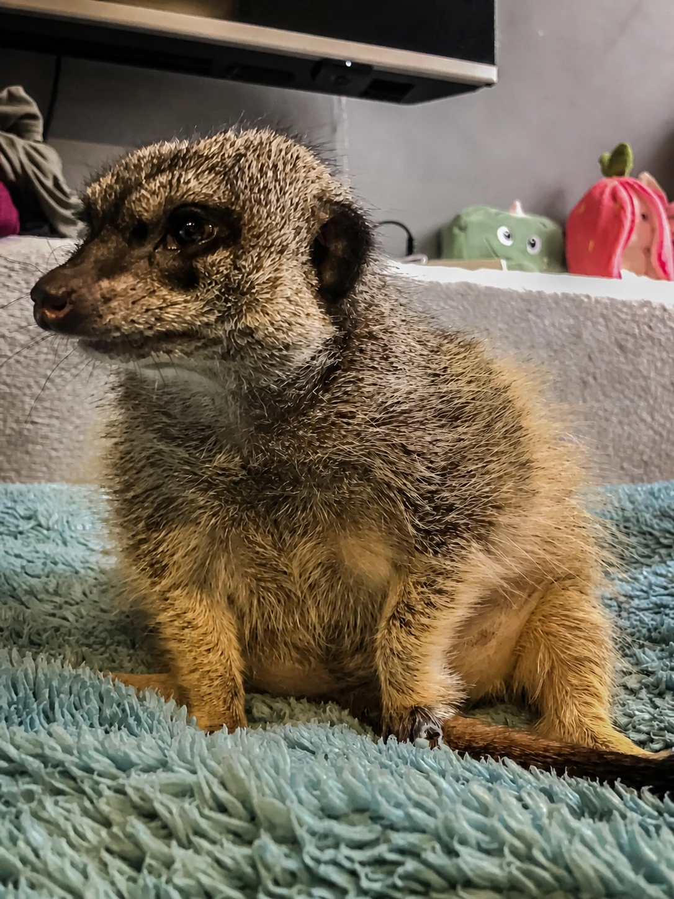
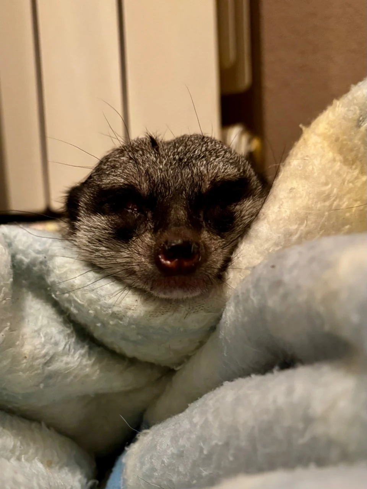
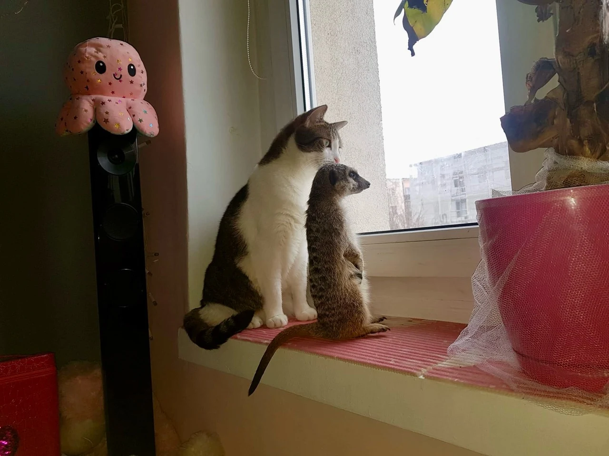
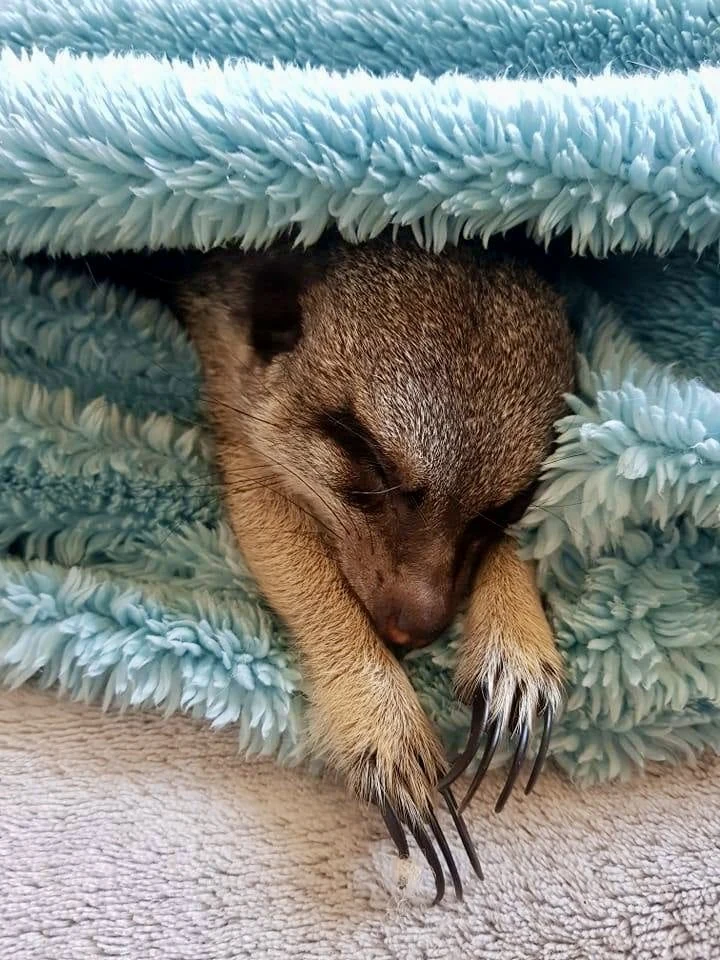

PORTRET JEDNEGO DOMU
Tofik jest czteroletnim samcem surykatki. Ma klatkę, lecz — jak opisują opiekunowie — pozostaje ona otwarta i pełni funkcję jego własnej bazy. Swobodnie chodzi po mieszkaniu, szuka obecności domowników, odpoczywa obok nich i uważnie reaguje na ruch oraz dźwięki.
Domownicy mówią o nim „członek stada”. Nauka podpowiada ostrożniejsze słowo: więź. Tofik aktywnie wybiera bliskość, ale pozostaje przedstawicielem dzikiego, niedomestykowanego gatunku.
ulubieniec rodziny i gości
indywidualna historia jednego zwierzęcia
swobodny ruch i stały kontakt z rodziną
relacje obserwowane i nadzorowane
Opis Tofika pochodzi z obserwacji rodziny. Informacje o biologii, komunikacji, żywieniu i dobrostanie opieramy na badaniach terenowych, publikacjach naukowych oraz podręczniku opieki akredytowanych ogrodów zoologicznych. Zachowania jednego osobnika nie są instrukcją dla wszystkich surykatek.


GATUNEK • ŚRODOWISKO • STADO
Suricata suricatta: mała mangusta z wielkim systemem społecznym
Surykatka należy do rodziny mangustowatych. Naturalny zasięg obejmuje suche obszary południowej Afryki — między innymi Namibię, Botswanę, Republikę Południowej Afryki i południowo-zachodnią Angolę. Zamieszkuje otwarte, suche równiny, sawanny i trawiaste krajobrazy, gdzie nory dają ochronę przed temperaturą i drapieżnikami.
Smithsonian podaje długość ciała około 25–35 cm oraz ogona 18–25 cm. Ciemne obwódki wokół oczu ograniczają odblask, mocne przednie pazury służą do kopania, a ogon pomaga zachować równowagę w charakterystycznej pionowej pozycji. To nie ozdoby — każdy element budowy wspiera życie na otwartej przestrzeni i pod ziemią.
Rodzina wspólnie broni terytorium, wychowuje młode, utrzymuje kontakt i reaguje na zagrożenia.
System korytarzy nie jest tylko legowiskiem. Reguluje ekspozycję na pogodę i organizuje rytm dnia.
Surykatki rozpraszają się, kopią i lokalizują małe ofiary, pozostając w kontakcie głosowym.
Osobnik na posterunku obserwuje otoczenie, a jego głosy wpływają na czujność pozostałych.
Surykatka domowa to określenie potoczne. Biologicznie Tofik nie jest zwierzęciem udomowionym takim jak pies czy kot — jest oswojonym osobnikiem dzikiego gatunku.
ODGŁOSY SURYKATKI
Nie jeden „pisk”, lecz język sytuacji
Badania Kalahari Meerkat Project pokazują wyjątkowo rozbudowaną komunikację głosową. Znaczenie zależy nie tylko od brzmienia, lecz także od kontekstu, pilności zagrożenia, rodzaju drapieżnika i tego, kto znajduje się w pobliżu. Dlatego domowego dźwięku nie powinno się tłumaczyć na pojedyncze ludzkie zdanie.
Cichy kontakt
Miękkie, krótkie odgłosy wydawane podczas żerowania pomagają rozproszonym osobnikom wiedzieć, gdzie znajduje się grupa.
Posterunek
Badacze rozróżnili co najmniej sześć typów głosów strażnika. Krótkie nuty działają jak sygnał spokojnej obecności; dłuższe formy wiążą się ze wzrostem postrzeganego ryzyka.
Alarm z informacją
Wołania alarmowe mogą kodować zarówno pilność, jak i kategorię zagrożenia. Grupa dopasowuje do nich reakcję.
Napięcie i konflikt
Niskie, ostre lub warczące wokalizacje mogą towarzyszyć obronie zasobów, dyskomfortowi i eskalacji społecznej.
Prośba o pokarm
Młode są szczególnie głośne podczas podążania za opiekunami grupy. Natężenie głosu nie musi oznaczać bólu.
„Chodźmy”
Głosy pomagają rozpoczynać wspólny ruch i powrót do nory. Komunikacja organizuje położenie grupy w przestrzeni.
Rodzina opisuje szeroki repertuar odgłosów i reakcję Tofika na niemal każdą zmianę. Najlepszy sposób poznawania jego komunikacji to zapis: krótki film, sytuacja poprzedzająca głos, postawa ciała i to, co wydarzyło się później. Powtarzalny kontekst mówi więcej niż sama nazwa dźwięku.

ZACHOWANIE SURYKATKI W DOMU
Blisko ludzi, stale na posterunku
Tofik często wybiera przebywanie z rodziną. Siada z domownikami podczas oglądania telewizji i reaguje na obraz, dźwięk oraz ruch w pomieszczeniu. Można bezpiecznie powiedzieć, że urządzenie dostarcza bodźców i że obecność ludzi ma dla niego znaczenie społeczne; nie ma podstaw, by twierdzić, że rozumie fabułę tak jak człowiek.
Jego stale otwarta klatka działa jak prywatna baza, a nie miejsce izolacji. Taki dobrowolny azyl ma wartość tylko wtedy, gdy nikt go tam nie niepokoi, zwierzę może wejść i wyjść z własnej inicjatywy, a środowisko poza nim pozostaje zabezpieczone.
Kontakt głosowy, wspólne przemieszczanie i odpoczynek ograniczają ryzyko utraty grupy.
Podąża za rodziną, obserwuje jej aktywność i szuka odpoczynku w pobliżu.
Mieszkanie może oferować ruch i kontakt, lecz nie zapewnia automatycznie podłoża do kopania, możliwości wyboru mikroklimatu, bezpiecznego światła, schronień ani kontrolowanej ekspozycji na bodźce. To wszystko trzeba zaprojektować osobno.
PAZURY • NORA • POSZUKIWANIE
Dlaczego fugi i listwy przegrywają z Tofikiem
Uwielbienie Tofika do szczelin, listew i fug nie jest złośliwością. Surykatki zdobywają znaczną część pokarmu, kopiąc, i żyją w rozbudowanych norach. Mocne, niewciągane pazury są narzędziami. Gdy naturalny cel nie jest dostępny, zachowanie znajduje zastępstwo — często dokładnie tam, gdzie pod palcem albo pazurem czuć krawędź.
Głęboka skrzynia
Bezpieczne podłoże o odpowiedniej głębokości, bez ostrych frakcji i toksycznego pyłu, pozwala rzeczywiście kopać, a nie tylko drapać powierzchnię.
Pokarm do odnalezienia
Część owadów można podawać w kontrolowanych zagadkach i punktach poszukiwania, dbając o higienę oraz pełny bilans diety.
Tunele i materiał do niszczenia
Różne bezpieczne tekstury, rury, papier i wymienne obiekty przenoszą pracę pazurów z wyposażenia domu na dozwolony cel.
Rotacja, nie przeładowanie
Wzbogacenie powinno mieć cel, być zmienne i możliwe do wycofania. Nadmiar nowych bodźców naraz może wywołać napięcie zamiast ciekawości.


CO JE SURYKATKA
Karaczan pasuje do biologii. Cały jadłospis musi pasować do organizmu
W naturze surykatki zjadają przede wszystkim bezkręgowce, a także drobne kręgowce, jaja i okazjonalnie materiał roślinny. Tofik otrzymuje głównie karaczany, surowe mięso, czasem owoce i białko jaja. To opis jego obecnego menu — nie gotowa dieta dla każdej surykatki.
Podręcznik AZA zaleca, by żywienie zwierząt w opiece człowieka opierało się na kompletnym planie ustalonym z lekarzem lub żywieniowcem, z owadami i całymi ofiarami wykorzystywanymi również jako wzbogacenie. Samo mięso mięśniowe nie dostarcza pełnego profilu minerałów i witamin. Owady też różnią się wartością, dlatego liczy się ich gatunek, żywienie przed podaniem i całość jadłospisu.
Owady i poszukiwanie
Różnorodne, prawidłowo utrzymane owady pozwalają łączyć pobieranie pokarmu z pracą węchową i kopaniem.
Mięso, jaja i dodatki
Nie powinny tworzyć przypadkowej podstawy. Rodzaj, proporcje i suplementację trzeba ustalać indywidualnie z lekarzem.
Nadmiar energii i tłuszczu
W badaniu 11 samców żywionych dietą z dużym udziałem tłustej całej ofiary wykazano hipercholesterolemię; zmiana diety istotnie obniżyła cholesterol.
Masa i kondycja w czasie
Liczy się trend, sylwetka, aktywność i badanie, nie jedno zdjęcie brzucha. Dostęp do czystej wody powinien być stały.
Najbezpieczniejszym kolejnym krokiem jest okresowa ocena masy i kondycji, przegląd całego tygodniowego jadłospisu oraz badania zalecone przez lekarza weterynarii zajmującego się ssakami egzotycznymi. Owoce i białko jaja mogą być dodatkiem tylko wtedy, gdy pasują do kompletnego planu.
TOFIK • KOT • POMERANIAN
Przyjaźń jest obserwacją. Bezpieczeństwo — procedurą
Tofik mieszka z kotem dachowcem i psem rasy pomeranian. Według rodziny z psem porozumienie jest spokojne; z kotem zdarzają się zaczepki, po których oba zwierzęta potrafią spać obok siebie. Te fotografie pięknie dokumentują ich relację, ale nie pozwalają obiecać takiego samego przebiegu w innym domu.
Kontakt kontroluje dorosły, który potrafi przerwać interakcję zanim napięcie stanie się pogonią, ugryzieniem lub chwytem.
Osobne miejsca karmienia, woda, odpoczynek i schronienie ograniczają konkurencję. Pokarm i kuweta kota nie powinny być dostępne dla surykatki.
Każde zwierzę musi móc odejść bez pościgu. Dobrowolna bliskość wygląda inaczej niż zablokowanie w kącie.
Regularna profilaktyka, szybka konsultacja po ugryzieniu i kontrola pasożytów chronią wszystkie gatunki w domu.

OPIEKA NAD SURYKATKĄ
Dom musi odpowiadać na potrzeby, nie tylko tolerować zachowanie
Surykatka w domu nie jest propozycją dla większości opiekunów. To bardzo społeczny, inteligentny, terytorialny i sprawny gatunek. Potrzebuje znacznie więcej niż klatki i miski: możliwości kopania, poszukiwania pokarmu, wyboru schronienia i mikroklimatu, regularnej aktywności, bezpiecznego kontaktu społecznego oraz dostępu do lekarza znającego ssaki egzotyczne.
apetyt, kał i mocz, ruch, komunikacja, skóra i oczy, zachowanie wobec ludzi i innych zwierząt
masa oraz kondycja, pazury, zęby, jakość futra, przegląd zabezpieczeń domu i skuteczność wzbogacenia
profilaktyczne badanie, plan żywienia, diagnostyka pasożytów i badania dodatkowe dobrane do wieku oraz ryzyka
aktualne przepisy, legalne pochodzenie, dostępność specjalisty, plan na kilkanaście lat i możliwość bezpiecznego rozdzielania zwierząt
Czujność, kopanie, śledzenie ruchu i silna potrzeba kontaktu czynią surykatkę fascynującą. Te same cechy mogą prowadzić do niszczenia wyposażenia, znakowania, konfliktów, frustracji i problemów zdrowotnych, jeśli środowisko nie daje im właściwego ujścia.

SZYBKIE ODPOWIEDZI
FAQ: surykatka domowa bez mitów
Czy surykatka jest dobrym zwierzęciem domowym?
Dla większości domów nie. Jest dzikim, bardzo społecznym i aktywnym gatunkiem, który intensywnie kopie, poszukuje pokarmu, znakuje oraz kontroluje otoczenie. Opieka wymaga specjalistycznej przestrzeni, procedur i lekarza.
Czy Tofik naprawdę traktuje rodzinę jak swoje stado?
Rodzina tak opisuje jego więź i wybieranie bliskości. Naukowo możemy powiedzieć, że domownicy są dla niego ważnymi partnerami społecznymi. Nie oznacza to jednak, że relacja z ludźmi w pełni zastępuje naturalny system społeczny surykatek.
Co je surykatka?
W naturze głównie bezkręgowce, a także drobne kręgowce, jaja i część materiału roślinnego. W opiece człowieka potrzebuje kompletnego, zbilansowanego planu; same owady albo surowe mięso nie gwarantują prawidłowego żywienia.
Dlaczego surykatka kopie fugi i listwy?
Bo kopanie i badanie szczelin są częścią naturalnego zdobywania pokarmu i pracy przy norze. Trzeba zapewnić bezpieczne, głębokie miejsce do kopania oraz zagadki żerowe, a dom fizycznie zabezpieczyć.
Co oznaczają odgłosy surykatki?
Zależy od sytuacji. Badania opisują między innymi ciche głosy kontaktowe, sygnały strażnika, alarmy kodujące pilność i rodzaj zagrożenia, nawoływania młodych oraz głosy konfliktowe. Postawa i kontekst są kluczowe.
Czy surykatka może żyć z kotem albo psem?
Zgodność jest indywidualna. Historia Tofika pokazuje, że bliska relacja jest możliwa, ale nie daje gwarancji dla innych zwierząt. Potrzebny jest nadzór, oddzielne zasoby, strefy wycofania i opieka weterynaryjna.
ŹRÓDŁA I GRANICE WNIOSKOWANIA
Na czym oparto ten wpis
Priorytet otrzymały badania terenowe, recenzowane publikacje o komunikacji i żywieniu, aktualne dane taksonomiczne oraz podręcznik opieki Association of Zoos and Aquariums. Historia Tofika jest podpisana jako obserwacja rodziny, a nie uniwersalny model hodowli surykatki.
- Mammal Diversity Database — Suricata suricatta. Aktualna taksonomia i zasięg.
- Smithsonian's National Zoo — Meerkat. Budowa, środowisko, zachowanie społeczne i podstawowe dane gatunkowe.
- Association of Zoos and Aquariums — Animal Care Manuals oraz Mongoose, Meerkat and Fossa Care Manual. Żywienie, podłoże, wzbogacenie, opieka społeczna i profilaktyka.
- Kalahari Research Centre / Kalahari Meerkat Project. Długoterminowe badania dzikich surykatek prowadzone od 1993 roku.
- Rauber & Manser (2017), Scientific Reports. Typy głosów strażnika i reakcje grupy na oceniane ryzyko.
- Hollén & Manser (2007), The American Naturalist. Informacja o pilności i rodzaju drapieżnika w głosach alarmowych.
- Townsend i wsp. (2012), Behavioral Ecology. Wpływ obecności odbiorców i pilności na wydawanie alarmów.
- Gall & Manser (2017), Current Zoology. Ciche głosy kontaktowe dorosłych podczas żerowania.
- Bousquet i wsp. (2022), Scientific Reports. Wokalna organizacja wspólnego ruchu i utrzymywanie spójności grupy.
- Heugten i wsp. (2020), Journal of Zoo and Aquarium Research. Hipercholesterolemia u 11 samców i odpowiedź na zmianę diety.
- Lintzenich i wsp. (2009), Zoo Biology. Kontrolowane przejście pięciu surykatek z nadwagą na inny plan żywieniowy.
- Merck Veterinary Manual — Nutrition in Zoo Carnivores. Bilans, kompletne diety i ryzyka żywienia surowym mięsem.
Stan źródeł i odnośników sprawdzony 22 sierpnia 2026. Przepisy i zalecenia medyczne mogą się zmieniać; przed nabyciem zwierzęcia należy potwierdzić aktualne wymogi oraz dostęp do lekarza weterynarii zajmującego się ssakami egzotycznymi.
TOFIK — JEDEN Z DOMOWNIKÓW
Najciekawszy jest nie dlatego, że przypomina człowieka
Jest fascynujący właśnie wtedy, gdy pozwalamy mu pozostać surykatką: czujną, głośną, kopiącą, społeczną i pełną własnych wyborów. Rodzina Tofika pokochała cały ten pakiet — nie tylko fotogeniczną pozę strażnika.
WRÓĆ DO BLOGA →